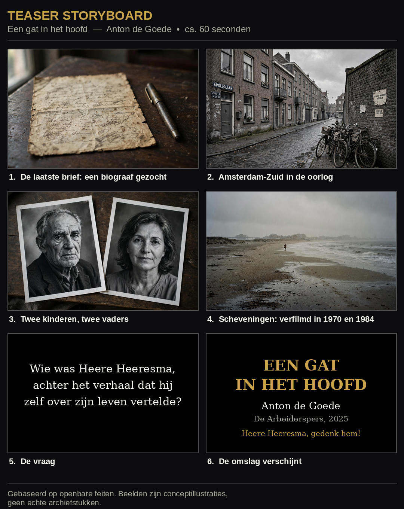

Live Project
Trailer Concept
Een gat in het hoofd
Biography. The storyboard concept for the life of Dutch writer Heere Heeresma, by Anton de Goede. Archive, memory and contradiction, told in six frames. The finished film is in Book Trailers below.